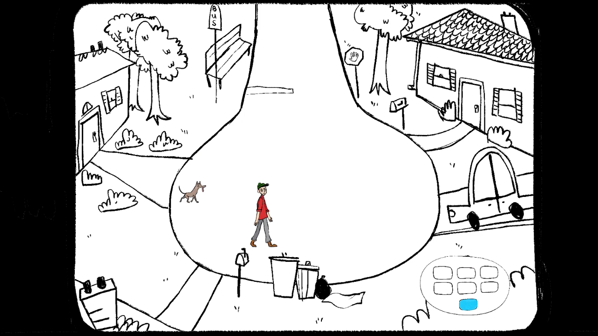
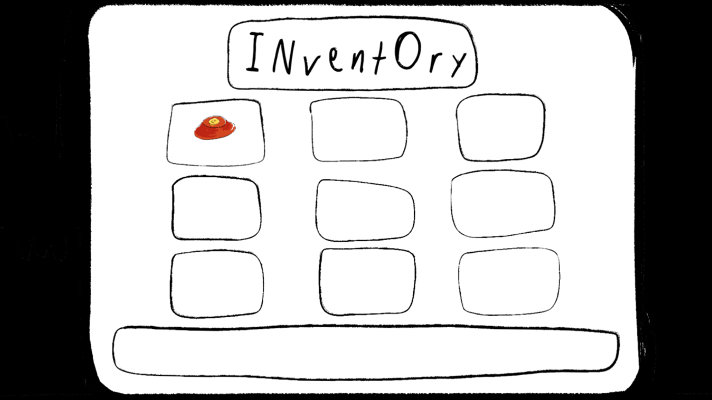

Dogs Day | Unity, C#
A heartwarming adventure game about man's best friend.
About the Game
Dogs Day is a 2D narrative-driven adventure game made in Unity. You play as a reclusive PhD student who gets brought out of his shell after meeting three lost dogs and helping them find their homes. After meeting each dog, you must explore the map to find special items that will trigger events when brought to certain locations. The game ends when you realize the third dog, a goofy-looking street dog, belongs at home with you.

My Contributions
- Inventory UI scripting (C#)
- Dog behavior scripting (C#)
- Contributed to narrative and game design planning

The Process
Dogs Day was developed in 48 hours for the 2019 Global Game Jam. The theme was "What Home Means To You," and all of my team members associated dogs with home. We spent Friday night planning and built the game over the rest of the weekend. My team included 3 programmers, 2 artists, and a writer. The game is unfinished, but we have worked individually on it since the jam, and everything is in place for the game to be finished.
Powered by w3.css